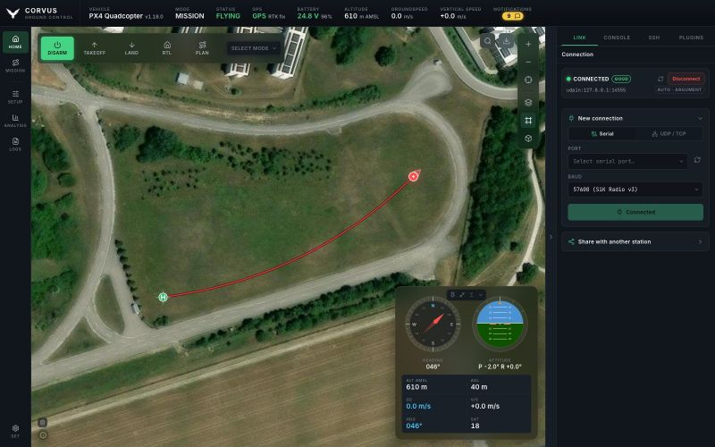

Start
Corvus GCS documentation
Corvus GCS is a ground control station for autonomous aircraft running PX4 or ArduPilot. It is the program open on a laptop while an aircraft is in the air: it shows where the vehicle is and what it is doing, and it talks to it over a serial telemetry radio, UDP or TCP. This manual explains every part of it in more depth than the README has room for.


What it is
Corvus is a Python backend and a web interface, wrapped into one standalone desktop application. There is no server to deploy and no browser tab to manage: one window, one process, and one clean shutdown that leaves no process, socket or open file behind. It runs on macOS, Linux and Windows, and everything it needs (Python, Qt and every library) is inside the app.
It is used for four things:
- Flying and monitoring. A large live map with the vehicle, its home point and its flown track, and a floating instrument panel that stays visible while you fly. In 3D the ground has its real shape and the aircraft is drawn at the height it is actually at.
- Preparing an aircraft. Motor wiring on a drawing of your own airframe, parameters, sensor and ESC calibration, radio setup, PID tuning and firmware flashing, all in the same window.
- Understanding a flight afterwards. Download the vehicle's logs over MAVLink, or use the recording Corvus made itself, and read either in the built-in Flight Review on your own machine.
- Working in the field. The interface loads nothing from the internet, map tiles go into a local store, and named areas can be downloaded in advance with their elevation. A laptop that has never seen a network still gets correct icons, fonts, graphs, maps and terrain.
Ready in seconds
Most ground stations download the entire parameter set from the autopilot the moment they connect: a thousand or more values, in full, before the interface is usable. Over a 57600 baud telemetry radio that takes minutes, every time you power up, and a lossy link can stall or restart the whole transfer.
Corvus streams only what flying needs when it connects: position, attitude, GPS, battery and link health. The full parameter set is fetched when you open the Parameters page, because that is the only moment it is needed. Setup pages that need a handful of parameters read just those, so the Motors page, for example, opens in about a second. The effect is that Corvus is ready to fly in seconds rather than minutes, and it stays usable on exactly the marginal links where a full download is most likely to fail.
Safety rules that apply everywhere
A few rules hold on every page, so they are stated once here:
- Refused while armed. Parameter writes, motor tests, firmware flashing, ESC calibration, radio programming and settings imports are all refused while the aircraft is armed.
- Input only. The on-screen joystick and key pads are input sources. They never arm, change mode or override a failsafe.
- No false success. A write the aircraft refused is never shown as applied: the control snaps back to the value the aircraft still holds.
- Missing is reported, not hidden. A feature the connected autopilot does not have is greyed out with the reason on it, rather than removed or left to fail.
Where to find what
- Install and runDownload the app, the first start, and running from source.
- Connect to the aircraftAuto-connect, serial, UDP and TCP, sharing the link, and the status bar.
- Map, HUD and flight controlsThe map, click to fly, the instrument panel, notifications and the checklist.
- 3D, terrain and offline mapsThe globe, elevation models, buildings, and maps for the field.
- Mission plannerDraw, check against terrain, upload and follow a mission.
- Airframe and motorsMotor outputs, frame size, motor test and output protocol.
- Safety, sensors and batteryLimits, failsafes, rangefinders, optical flow and the pack.
- Parameters and calibrationEvery parameter with its default, and guided calibration.
- Radio control and tuningThe transmitter drawn live, PID tuning and autotune.
- Telemetry radio, RTK and Remote IDSiK radios, RTK corrections and the identity broadcast.
- FirmwareFlashing PX4 or ArduPilot over USB.
- Video and windowsCameras and the floating windows they open in.
- Logs and Flight ReviewDownload, record and review flights.
- Console and SSHThe MAVLink console and a terminal to the companion computer.
- PluginsThe plugins that ship, and writing your own.
- SettingsAppearance, map keys, controls, files, export and updates.
- PX4 and ArduPilotSupported versions and where the two stacks differ.
- Network and securityWho can reach the station, SSH host keys and MAVLink signing.
- Files, settings and variablesFolders, the config file, arguments and environment variables.
- Build the appsBuilding the macOS, Linux and Windows apps yourself.
Getting help
If something is awkward, slow or wrong, please open an issue with the autopilot and firmware version, the connection type (serial, UDP or TCP) and what you were doing. Feature wishes are just as welcome: describe the problem you have in the field rather than the solution, which usually leads somewhere better.